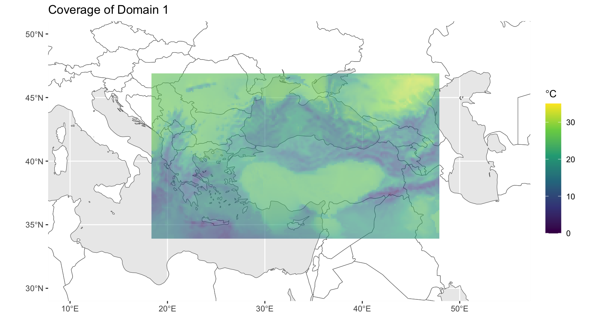
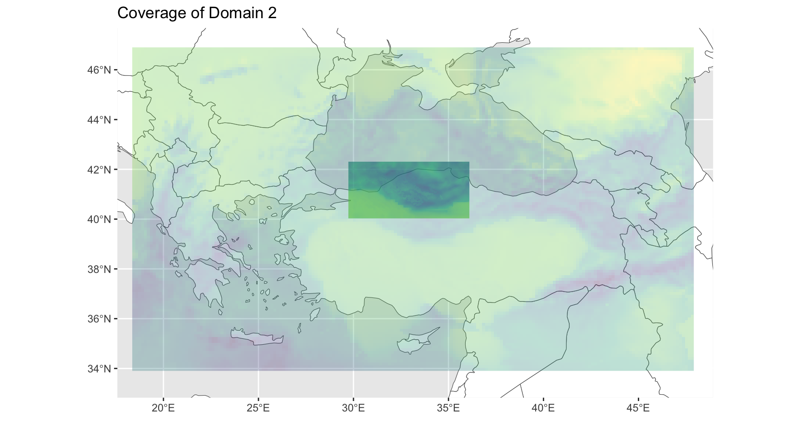
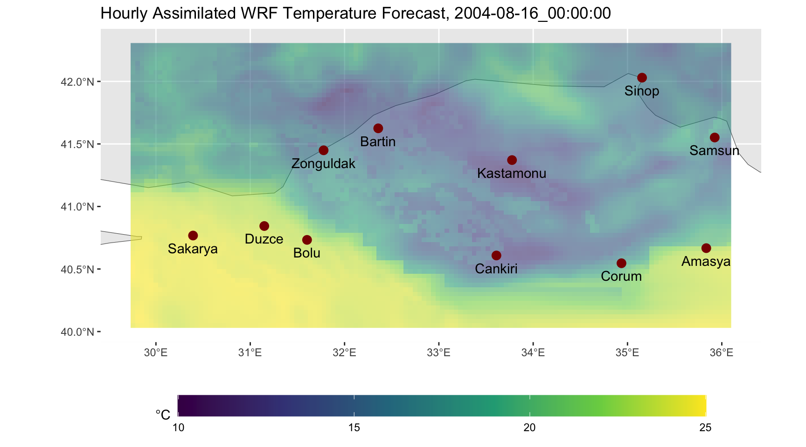
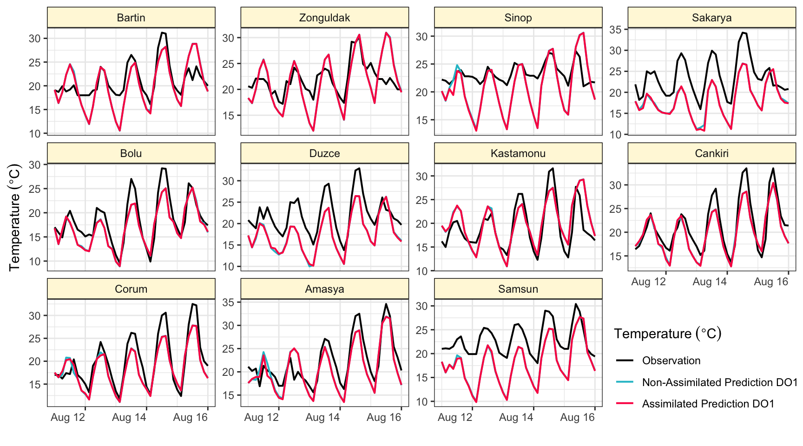
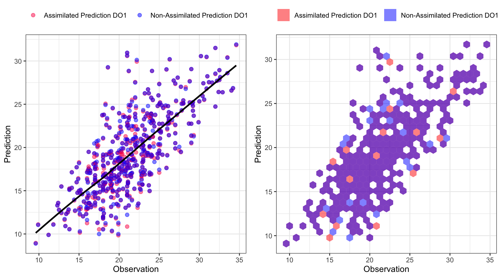
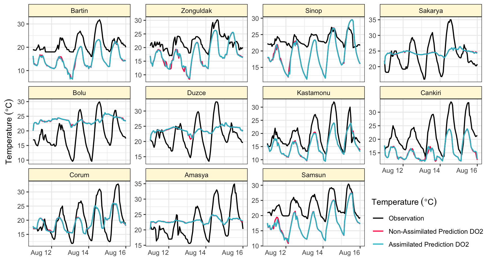
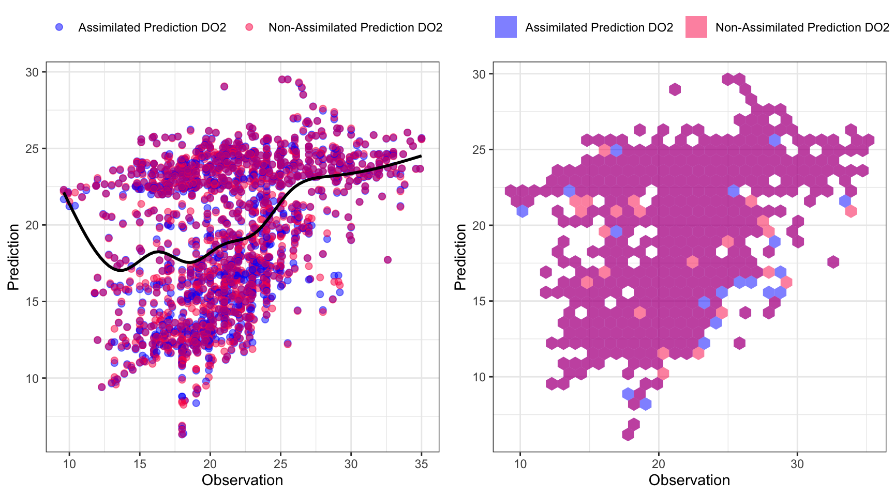
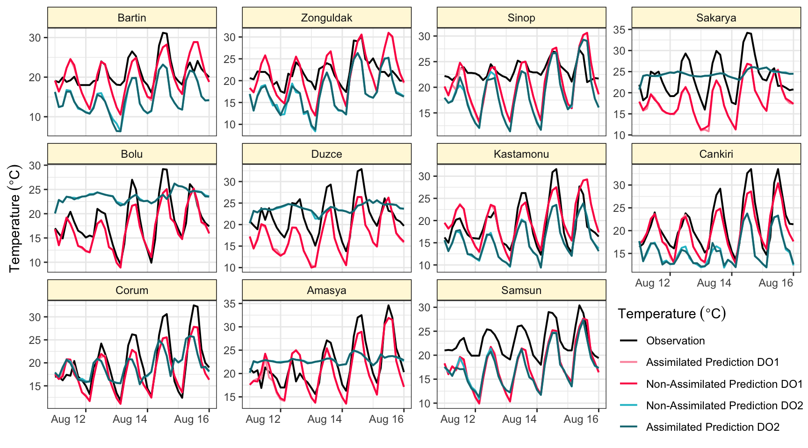

library(readxl)
library(tidyverse)
library(ggplot2)
library(raster)
library(rnaturalearth)
library(ncdf4)
library(R.utils)
library(sf)
library(gt)
library(ggpubr)
library(rnaturalearthdata)Evaluation of 3D-var Data Assimilation of WRF Temperature Prediction Over Northwestern Türkiye: A Case Study for the Period of 11 and 16 August, 2004
Abstract
In this project, we have been evaluated temperature prediction of assimilated and non assimilated WRF outputs over Northwestern Türkiye for the period of 11-16 August, 2004. Observation of eleven temperature gauges and corresponding WRF predictions in the study area have been compared. Moreover, predictions were extracted from assimilated and non assimilated raw WRF data of different domains with varied spatio-temporal resolutions by using gauges coordinates. For this purpose, visualization of results and calculation of error proceedings were performed in R programming and Quarto publishing system.
Note
This document is a product of the final project for the STAT 570 lecture, focusing on data handling and visualization tools. It is essential to acknowledge that minor errors may be present, and the methods employed may not necessarily reflect the optimal approach related to the dataset.
1 Introduction
1.1 Numerical Weather Prediction (NWP) Models
Numerical Weather Prediction (NWP) models are used to predict weather conditions by simulating the atmosphere, oceans, land surface and their interactions. NWP models are based on mathematical equations representing the physical behavior of the atmosphere. These equations are translated into computer code and use governing equations, numerical methods, parameterizations of other physical processes and combined with initial and boundary conditions before running over a geographic area (we call that geographic area as domain). These physical processes need to be approximated in models because of huge simulation computer time which is called as parameterization.
According to ECMWF report, these processes affect too a small area to be predicted in full detail by NWP models. The major reason lies in the limited computing power that still does not allow us to calculate the all processes for any place on Earth (Frnda et al. 2022).
1.2 Data Assimilation
NWP models start with an initial value and it is the challenge because initial-value effects next predictions with an increasing error. Thus, updating initial-value prediction is a method to improve prediction accuracy which is called as data assimilation. Infrared radiance from the geostationary satellites and on-site radiosonde observation data assimilation are powerful tools to improve the weather forecast have been widely applied with this purpose in the past a few decades (Geer et al. 2018).
There are a number of data assimilation techniques used in weather forecasting. One of the most prominent are the three and four dimensional variational data assimilation methods (3D-var and 4D-var). 3D-var incorporates meteorological data only within a time window around the initialization moment and in this method the analysis increment (an increment is introduced due to the actual observations) does not evolve in time, e.g. it has effect only at the beginning of the simulation. On the other hand 4D-var method uses tangent linear and adjoint models which model the propagation of analysis increment and more computing time is needed (Vladimirov, Dimitrova, and Danchovski 2020).
1.3 Weather Research and Forecasting (WRF) model
The Weather Research and Forecasting (WRF) model is a next-generation open source mesoscale numerical weather prediction system. As it is open source, it has a very flexible structure that allows it to be used by met-offices, universities and atmospheric research centers (Powers et al. 2017). The effort to develop WRF began in the latter 1990’s and was a collaborative partnership of the National Center for Atmospheric Research (NCAR), the National Oceanic and Atmospheric Administration (NOAA), the U.S. Air Force, the Naval Research Laboratory, the University of Oklahoma, and the Federal Aviation Administration (WRF web page).
The WRF model is used for operational weather forecasting and research purposes at Turkish State Meteorological Service since last two decades, as it is at many meteorological services around the world. It is the fact that data assimilation of observations into WRF model method is very popular not only in Türkiye but also in all over world since it has a great potential to improve model forecast skill by reducing errors of initial conditions (Yucel and Onen 2014; Yucel et al. 2015; Bao et al. 2015; Cheng et al. 2017).
2 Operations on Assimilated WRF Data
There are two files for two different domains as assimilated and non-assimilated predictions of WRF model. Thus, there are four netcdf files totally. We are going to define prediction variables, forecast period and coverage of domains for each file.
2.1 Uploading Necessary Packages
We need several packages for some implementations in R, for instance; opening of the netcdf files of WRF data, handling of WRF outputs, visualization and similar operations (Wickham and Bryan 2023; Wickham et al. 2019; Wickham 2016; Kassambara 2023; Hijmans 2023; Massicotte and South 2023; Pierce 2023; Bengtsson 2023; Pebesma and Bivand 2023; Iannone et al. 2023).
2.2 Temperature Forecast of WRF in Domain 1
The code in the below reads a NetCDF file (fname) using the nc_open function from the ncdf4 package. NetCDF is a file format commonly used for storing multidimensional scientific data including NWP model output.
Firstly, we opened the assimilated WRF output for domain 1. By using sink function the content of WRF output at the attachments (wrfout_d01_2004-08-11_00_00_00.txt) can be created. The data cover time and coverage domain information with meteorological predictions such as potential temperature (T), temperature at 2 meter (T2), wind speed at ten meter (U10 & V10), precipitation (RAINC & RAINNC) and etc. We need to use name of the variables to extract specific data variables from the raw data.
fname <- paste0(setwd(here::here()),
"/aswout/wrfout_d01_2004-08-11_00_00_00")
nc_data <- nc_open(fname)
{sink(paste0(fname,".txt"))
print(nc_data)
sink()}In the WRF data, air temperature at 2 meter (the height of observation at gauges) is available. If 2 meter temperature is not available in netcdf file, the calculation of Air Temperature Prediction from WRF data is described at the given link based on WRF manual. In such a case, perturbation potential temperature, base pressure and perturbation pressure variables has to be extracted to get air temperature prediction.
float T2[west_east,south_north,Time]
FieldType: 104
MemoryOrder: XY
description: TEMP at 2 M
units: K
stagger:
coordinates: XLONG XLAT2.2.1 Spatial Resolution (Domain 1)
Spatial resolution of domain 1 is 12 km as you can see below (DX: 12000, DY:12000).
78 global attributes:
TITLE: OUTPUT FROM WRF V3.1.1 MODEL
START_DATE: 2004-08-11_00:00:00
SIMULATION_START_DATE: 2004-08-11_00:00:00
WEST-EAST_GRID_DIMENSION: 192
SOUTH-NORTH_GRID_DIMENSION: 116
BOTTOM-TOP_GRID_DIMENSION: 28
DX: 12000
DY: 12000Here, the code extracts specific variables (longitude, latitude, temperature, and time) from the NetCDF file using the ncvar_getfunction. There are 41 time steps which means we can get predictions along the domain (191x115) for whole period. Additionally, the data includes information for 27 layers from bottom to top of the atmosphere. Fortunately, we do not have to deal with upper layers’ data since we just need to extract temperature predictions at 2 meters.
long<- ncvar_get(nc_data, "XLONG")
lat<- ncvar_get(nc_data, "XLAT", verbose = F)
temp<- ncvar_get(nc_data, "T2")
dim(temp)[1] 191 115 41dim(ncvar_get(nc_data, "T"))[1] 191 115 27 412.2.2 Forecast Period & Time Interval (Domain 1)
We can also obtained the forecast horizon by getting time steps from the data. After getting time steps, we see that forecast period is between 11 and 16 (00:00 UTC) August, 2004. In this case, the time interval for the forecast period up to +120 hours (or five days) is three hour.
t <- ncvar_get(nc_data, "Times"); t [1] "2004-08-11_00:00:00" "2004-08-11_03:00:00" "2004-08-11_06:00:00"
[4] "2004-08-11_09:00:00" "2004-08-11_12:00:00" "2004-08-11_15:00:00"
[7] "2004-08-11_18:00:00" "2004-08-11_21:00:00" "2004-08-12_00:00:00"
[10] "2004-08-12_03:00:00" "2004-08-12_06:00:00" "2004-08-12_09:00:00"
[13] "2004-08-12_12:00:00" "2004-08-12_15:00:00" "2004-08-12_18:00:00"
[16] "2004-08-12_21:00:00" "2004-08-13_00:00:00" "2004-08-13_03:00:00"
[19] "2004-08-13_06:00:00" "2004-08-13_09:00:00" "2004-08-13_12:00:00"
[22] "2004-08-13_15:00:00" "2004-08-13_18:00:00" "2004-08-13_21:00:00"
[25] "2004-08-14_00:00:00" "2004-08-14_03:00:00" "2004-08-14_06:00:00"
[28] "2004-08-14_09:00:00" "2004-08-14_12:00:00" "2004-08-14_15:00:00"
[31] "2004-08-14_18:00:00" "2004-08-14_21:00:00" "2004-08-15_00:00:00"
[34] "2004-08-15_03:00:00" "2004-08-15_06:00:00" "2004-08-15_09:00:00"
[37] "2004-08-15_12:00:00" "2004-08-15_15:00:00" "2004-08-15_18:00:00"
[40] "2004-08-15_21:00:00" "2004-08-16_00:00:00"ymd_hms(t[41]) - ymd_hms(t[1])Time difference of 5 days2.2.3 Study Area (Domain 1)
Figure 1 below shows the coverage of domain 1 where covers Türkiye and its surrounding. The code in the below creates a list of raster objects for each time step from the extracted temperature from raw WRF data set. Kelvin unit has been converted into Celcius by implementing -273.15. Raster objects are used for working with gridded spatial data. Additionally, ggplot2 package is used to create a map visualization. It overlays the temperature data onto a map of countries, setting up appropriate coordinate systems and color scales.
raster_temp<- list()
for (i in 1:dim(temp)[3]) {
raster_temp[[i]] <- raster(t(temp[, , i] - 273.15),
xmn=min(long), xmx=max(long),
ymn=min(lat), ymx=max(lat),
crs=CRS("+proj=longlat +ellps=WGS84 +datum=WGS84 +no_defs+ towgs84=0,0,0"))
}
temp_df <-as.data.frame(raster_temp[[length(t)]], xy = TRUE)
world <- rnaturalearth::ne_countries(scale='medium',returnclass = 'sf')
ggplot(data = world) + geom_sf(fill = "white") +
coord_sf(crs = st_crs(4326), xlim = c(10, 55), ylim = c(30,50)) +
geom_raster(data = temp_df, aes(x, y, fill = layer), alpha=0.6) +
scale_fill_viridis_c(limits = c(0, 35)) +
labs(x="",y="", fill= expression(degree*C)) +
ggtitle("Coverage of Domain 1") + theme(legend.key.height = unit(1, "cm"))

2.3 Temperature Forecast of WRF in Domain 2
There are 121 time steps for second domain since we can inference by dimension of T2 data.
fname2 <- paste0(setwd(here::here()),
"/aswout/wrfout_d02_2004-08-11_00_00_00")
nc_data2 <- nc_open(fname2)
{sink(paste0(fname2,".txt"))
print(nc_data2)
sink()}
long_2<- ncvar_get(nc_data2, "XLONG")
lat_2<- ncvar_get(nc_data2, "XLAT", verbose = F)
temp_2<- ncvar_get(nc_data2, "T2")
dim(temp_2)[1] 132 63 1212.3.1 Spatial Resolution (Domain 2)
Spatial resolution of domain 2 is 4 km which is a finer resolution than previous one (DX: 4000, DY: 4000).
78 global attributes:
TITLE: OUTPUT FROM WRF V3.1.1 MODEL
START_DATE: 2004-08-11_00:00:00
SIMULATION_START_DATE: 2004-08-11_00:00:00
WEST-EAST_GRID_DIMENSION: 133
SOUTH-NORTH_GRID_DIMENSION: 64
BOTTOM-TOP_GRID_DIMENSION: 28
DX: 4000
DY: 40002.3.2 Forecast Period & Time Interval (Domain 2)
Forecast period for domain 2 is same with previous one. However, the time interval is one hour and it has a finer temporal resolution.
t2 <- ncvar_get(nc_data2, "Times"); t2 [1] "2004-08-11_00:00:00" "2004-08-11_01:00:00" "2004-08-11_02:00:00"
[4] "2004-08-11_03:00:00" "2004-08-11_04:00:00" "2004-08-11_05:00:00"
[7] "2004-08-11_06:00:00" "2004-08-11_07:00:00" "2004-08-11_08:00:00"
[10] "2004-08-11_09:00:00" "2004-08-11_10:00:00" "2004-08-11_11:00:00"
[13] "2004-08-11_12:00:00" "2004-08-11_13:00:00" "2004-08-11_14:00:00"
[16] "2004-08-11_15:00:00" "2004-08-11_16:00:00" "2004-08-11_17:00:00"
[19] "2004-08-11_18:00:00" "2004-08-11_19:00:00" "2004-08-11_20:00:00"
[22] "2004-08-11_21:00:00" "2004-08-11_22:00:00" "2004-08-11_23:00:00"
[25] "2004-08-12_00:00:00" "2004-08-12_01:00:00" "2004-08-12_02:00:00"
[28] "2004-08-12_03:00:00" "2004-08-12_04:00:00" "2004-08-12_05:00:00"
[31] "2004-08-12_06:00:00" "2004-08-12_07:00:00" "2004-08-12_08:00:00"
[34] "2004-08-12_09:00:00" "2004-08-12_10:00:00" "2004-08-12_11:00:00"
[37] "2004-08-12_12:00:00" "2004-08-12_13:00:00" "2004-08-12_14:00:00"
[40] "2004-08-12_15:00:00" "2004-08-12_16:00:00" "2004-08-12_17:00:00"
[43] "2004-08-12_18:00:00" "2004-08-12_19:00:00" "2004-08-12_20:00:00"
[46] "2004-08-12_21:00:00" "2004-08-12_22:00:00" "2004-08-12_23:00:00"
[49] "2004-08-13_00:00:00" "2004-08-13_01:00:00" "2004-08-13_02:00:00"
[52] "2004-08-13_03:00:00" "2004-08-13_04:00:00" "2004-08-13_05:00:00"
[55] "2004-08-13_06:00:00" "2004-08-13_07:00:00" "2004-08-13_08:00:00"
[58] "2004-08-13_09:00:00" "2004-08-13_10:00:00" "2004-08-13_11:00:00"
[61] "2004-08-13_12:00:00" "2004-08-13_13:00:00" "2004-08-13_14:00:00"
[64] "2004-08-13_15:00:00" "2004-08-13_16:00:00" "2004-08-13_17:00:00"
[67] "2004-08-13_18:00:00" "2004-08-13_19:00:00" "2004-08-13_20:00:00"
[70] "2004-08-13_21:00:00" "2004-08-13_22:00:00" "2004-08-13_23:00:00"
[73] "2004-08-14_00:00:00" "2004-08-14_01:00:00" "2004-08-14_02:00:00"
[76] "2004-08-14_03:00:00" "2004-08-14_04:00:00" "2004-08-14_05:00:00"
[79] "2004-08-14_06:00:00" "2004-08-14_07:00:00" "2004-08-14_08:00:00"
[82] "2004-08-14_09:00:00" "2004-08-14_10:00:00" "2004-08-14_11:00:00"
[85] "2004-08-14_12:00:00" "2004-08-14_13:00:00" "2004-08-14_14:00:00"
[88] "2004-08-14_15:00:00" "2004-08-14_16:00:00" "2004-08-14_17:00:00"
[91] "2004-08-14_18:00:00" "2004-08-14_19:00:00" "2004-08-14_20:00:00"
[94] "2004-08-14_21:00:00" "2004-08-14_22:00:00" "2004-08-14_23:00:00"
[97] "2004-08-15_00:00:00" "2004-08-15_01:00:00" "2004-08-15_02:00:00"
[100] "2004-08-15_03:00:00" "2004-08-15_04:00:00" "2004-08-15_05:00:00"
[103] "2004-08-15_06:00:00" "2004-08-15_07:00:00" "2004-08-15_08:00:00"
[106] "2004-08-15_09:00:00" "2004-08-15_10:00:00" "2004-08-15_11:00:00"
[109] "2004-08-15_12:00:00" "2004-08-15_13:00:00" "2004-08-15_14:00:00"
[112] "2004-08-15_15:00:00" "2004-08-15_16:00:00" "2004-08-15_17:00:00"
[115] "2004-08-15_18:00:00" "2004-08-15_19:00:00" "2004-08-15_20:00:00"
[118] "2004-08-15_21:00:00" "2004-08-15_22:00:00" "2004-08-15_23:00:00"
[121] "2004-08-16_00:00:00"ymd_hms(t2[121]) - ymd_hms(t2[1])Time difference of 5 days2.3.3 Study Area (Domain 2)
Figure 2 below shows the comparison of two domains and coverage of domain 2 where covers some part of northwest of Türkiye. It is clearly seen that the intersection of domain 1 and 2 is the entire domain 2. Thus, our study area become only the entire domain 2.
raster_temp_2<- list()
for (i in 1:dim(temp_2)[3]) {
raster_temp_2[[i]] <- raster(t(temp_2[, , i] - 273.15),
xmn=min(long_2), xmx=max(long_2),
ymn=min(lat_2), ymx=max(lat_2),
crs=CRS("+proj=longlat +ellps=WGS84 +datum=WGS84 +no_defs+ towgs84=0,0,0"))
}
temp_df_2 <-as.data.frame(raster_temp_2[[length(t2)]], xy = TRUE)
world <- rnaturalearth::ne_countries(scale='medium',returnclass = 'sf')
ggplot(data = world) + geom_sf(fill = "white") +
coord_sf(crs = st_crs(4326), xlim = c(19, 47.5), ylim = c(33.5,47)) +
geom_raster(data = temp_df,
aes(x, y, fill= layer), alpha=0.3, show.legend = FALSE) +
geom_raster(data = temp_df_2,
aes(x, y, fill= layer), alpha=0.7, show.legend = FALSE) +
scale_fill_viridis_c() + labs(x="",y="") +
ggtitle("Coverage of Domain 2")

2.4 Derivation of Temperature Prediction & Observation
2.4.1 Identification of Meteorological Stations
Domain 2 covers several provinces which are located northwest of Türkiye. Thus, we need to determine meteorological stations for comparing observation versus assimilated and non-assimilated WRF predictions. The code in the chunk reads data from a delimited text file containing information about meteorological stations. Each specific station was selected for each province to evaluate the performance of both assimilated and non-assimilated WRF predictions. Table 1 shows the main gauges across the domain 2.
The code uses the dplyr and gt packages for data manipulation and table creation. It assist to perform data wrangling and cleaning on the meteorological station data, containing renaming columns, converting province names, and arranging the data. The tolower function is used to convert the province names to lowercase. The str_to_title() function from the stringr package is applied to convert the province names’ first letter to title case.
df_gauges <- read.delim(paste0(setwd(here::here()),"/gauges.txt"), sep="|")
df_gauges<- df_gauges[,-c(3,4)]
colnames(df_gauges)<- c("Station","Province","Latitude","Longitude","Altitude")
df_gauges$Province <- tolower(df_gauges$Province) |> str_to_title()
df_gauges<- df_gauges |> arrange(Station)
df_gauges |> gt()| Station | Province | Latitude | Longitude | Altitude |
|---|---|---|---|---|
| 17020 | Bartin | 41.62480 | 32.35690 | 33 |
| 17022 | Zonguldak | 41.44924 | 31.77792 | 135 |
| 17026 | Sinop | 42.02990 | 35.15450 | 32 |
| 17069 | Sakarya | 40.76760 | 30.39340 | 30 |
| 17070 | Bolu | 40.73290 | 31.60220 | 743 |
| 17072 | Duzce | 40.84370 | 31.14880 | 146 |
| 17074 | Kastamonu | 41.37100 | 33.77560 | 800 |
| 17080 | Cankiri | 40.60820 | 33.61020 | 755 |
| 17084 | Corum | 40.54610 | 34.93620 | 776 |
| 17085 | Amasya | 40.66680 | 35.83530 | 409 |
| 17622 | Samsun | 41.55150 | 35.92470 | 103 |
Figure 3 is shown for distribution of meteorological stations across the study area.
extents<- extent(raster_temp_2[[length(t2)]])
ggplot(data = world) + geom_sf(fill = "white") +
coord_sf(crs = st_crs(4326), xlim = c(extents[1], extents[2]),
ylim = c(extents[3],extents[4])) +
geom_raster(data = temp_df_2,
aes(x, y, fill = layer), alpha=0.6) +
scale_fill_viridis_c(limits = c(10, 25)) +
labs(x="",y="", fill= expression(degree*C)) +
geom_point(data = df_gauges, aes(x=Longitude, y=Latitude),
size=3, colour="darkred") +
geom_text(data= df_gauges, mapping = aes(x=Longitude, y=Latitude,
label=Province), nudge_y = -0.1) +
ggtitle(paste("Hourly Assimilated WRF Temperature Forecast,", t2[121])) +
theme(legend.key.width=unit(3,"cm"), legend.position="bottom")

2.4.2 Obtain Temperature Observations
The code reads temperature observations from an excel file. In the raw data, there is no date column but it has multiple columns which are defined for year, month, day and hour information. Therefore, we need to convert them into the single date column by merging them. Then, these columns can be removed by non-selecting. In the raw data set, some dates can be missing. However, these are not defined as null. Therefore, leaping values can be detected then it assigned as a null by using complete function.
temp_obs<- read_excel(paste0(setwd(here::here()),
"/observation.xlsx"))
head(temp_obs)# A tibble: 6 × 7
Istasyon_No Istasyon_Adi YIL AY GUN SAAT SICAKLIK
<dbl> <chr> <dbl> <dbl> <dbl> <dbl> <dbl>
1 17020 BARTIN 2004 8 10 0 18.7
2 17020 BARTIN 2004 8 10 1 18.3
3 17020 BARTIN 2004 8 10 2 18
4 17020 BARTIN 2004 8 10 3 17.1
5 17020 BARTIN 2004 8 10 4 17.6
6 17020 BARTIN 2004 8 10 5 18.3temp_obs<-
temp_obs |>
mutate(date= as.Date(with(temp_obs, paste(YIL,AY,GUN,sep="-")),"%Y-%m-%d")) |>
mutate(dates= ymd_hms(paste(date, paste(SAAT, 0, 0, sep = ":")), tz="UTC")) |>
dplyr::select(Istasyon_No, dates, SICAKLIK) |>
group_by(Istasyon_No) |>
tidyr::complete( dates = seq(ymd_hm("2004-08-10 00:00"),
ymd_hm("2004-08-16 23:00"), by = "1 hours"))
colnames(temp_obs)<- c("Station","dates","observation")
head(temp_obs)# A tibble: 6 × 3
# Groups: Station [1]
Station dates observation
<dbl> <dttm> <dbl>
1 17020 2004-08-10 00:00:00 18.7
2 17020 2004-08-10 01:00:00 18.3
3 17020 2004-08-10 02:00:00 18
4 17020 2004-08-10 03:00:00 17.1
5 17020 2004-08-10 04:00:00 17.6
6 17020 2004-08-10 05:00:00 18.32.4.3 Extraction of Temperature Predictions from WRF
This code stacks raster layers (since time is not constant) and extracts temperature values for meteorological station locations. Gauge locations and prediction values with time need to be combined and data frame columns need to be renamed after extraction procedure. The table below contains three-hour temperature predictions for each province/gauge in domain 1.
centroids <- df_gauges[,c(1,3,4)]
coordinates(centroids)= ~ Longitude + Latitude
# domain1
raster_temp_stack<- stack(raster_temp)
raster_temp_value<- raster::extract(raster_temp_stack, centroids)
rt_cpv <- cbind(centroids,raster_temp_value)
rt_cpv_df<- data.frame(rt_cpv)
colnames(rt_cpv_df) [1] "Station" "layer.1" "layer.2" "layer.3" "layer.4" "layer.5"
[7] "layer.6" "layer.7" "layer.8" "layer.9" "layer.10" "layer.11"
[13] "layer.12" "layer.13" "layer.14" "layer.15" "layer.16" "layer.17"
[19] "layer.18" "layer.19" "layer.20" "layer.21" "layer.22" "layer.23"
[25] "layer.24" "layer.25" "layer.26" "layer.27" "layer.28" "layer.29"
[31] "layer.30" "layer.31" "layer.32" "layer.33" "layer.34" "layer.35"
[37] "layer.36" "layer.37" "layer.38" "layer.39" "layer.40" "layer.41"
[43] "Longitude" "Latitude" "optional" rt_cpv_df<- rt_cpv_df[,-ncol(rt_cpv_df)]
head(rt_cpv_df)[,1:5] Station layer.1 layer.2 layer.3 layer.4
1 17020 19.14172 16.38781 18.63476 22.33074
2 17022 18.32778 17.36398 20.07202 23.92535
3 17026 20.14706 18.49960 20.52038 19.43371
4 17069 17.88046 15.75091 16.23025 19.67379
5 17070 16.78866 13.52252 16.43801 19.22317
6 17072 17.22476 14.45699 16.89929 19.99230rt_cpv_df<-
rt_cpv_df |>
dplyr::select(Station, Longitude, Latitude, everything() )
colnames(rt_cpv_df) <- append(colnames(rt_cpv_df[1:3]),as.character(t))
head(rt_cpv_df)[,1:5] Station Longitude Latitude 2004-08-11_00:00:00 2004-08-11_03:00:00
1 17020 32.35690 41.62480 19.14172 16.38781
2 17022 31.77792 41.44924 18.32778 17.36398
3 17026 35.15450 42.02990 20.14706 18.49960
4 17069 30.39340 40.76760 17.88046 15.75091
5 17070 31.60220 40.73290 16.78866 13.52252
6 17072 31.14880 40.84370 17.22476 14.45699Same procedures applied in previous chunk has to be followed for assimilated data but for domain 2.
# domain2
raster_temp_stack_2<- stack(raster_temp_2)
raster_temp_value_2<- raster::extract(raster_temp_stack_2, centroids)
rt_cpv_2 <- cbind(centroids,raster_temp_value_2)
rt_cpv_df_2<- data.frame(rt_cpv_2)
rt_cpv_df_2<- rt_cpv_df_2[,-ncol(rt_cpv_df_2)]
rt_cpv_df_2<-
rt_cpv_df_2 |>
dplyr::select(Station, Longitude, Latitude, everything() )
colnames(rt_cpv_df_2)<- append(colnames(rt_cpv_df_2[1:3]),as.character(t2))
head(rt_cpv_df_2)[,1:5] Station Longitude Latitude 2004-08-11_00:00:00 2004-08-11_01:00:00
1 17020 32.35690 41.62480 16.26486 12.88519
2 17022 31.77792 41.44924 16.93813 14.32098
3 17026 35.15450 42.02990 17.94399 18.06762
4 17069 30.39340 40.76760 20.76284 23.30419
5 17070 31.60220 40.73290 20.05142 22.39242
6 17072 31.14880 40.84370 20.31973 22.241603 Operations on Non-Assimilated WRF Data
We need to apply similar procedures on non-assimilated WRF predictions for extraction as shown above.
#domain1
fname_nas <- paste0(setwd(here::here()),
"/wout/wrfout_d01_2004-08-11_00_00_00")
nc_data_nas <- nc_open(fname_nas)
{sink(paste0(fname_nas,".txt"))
print(nc_data_nas)
sink()}
long_nas<- ncvar_get(nc_data_nas, "XLONG")
lat_nas<- ncvar_get(nc_data_nas, "XLAT", verbose = F)
temp_nas<- ncvar_get(nc_data_nas, "T2")
t_nas <- ncvar_get(nc_data_nas, "Times")
raster_temp_nas<- list()
for (i in 1:dim(temp_nas)[3]) {
raster_temp_nas[[i]] <- raster(t(temp_nas[, , i] - 273.15),
xmn=min(long_nas), xmx=max(long_nas),
ymn=min(lat_nas), ymx=max(lat_nas),
crs=CRS("+proj=longlat +ellps=WGS84 +datum=WGS84 +no_defs+ towgs84=0,0,0"))
}
#domain2
fname2_nas <- paste0(setwd(here::here()),
"/wout/wrfout_d02_2004-08-11_00_00_00")
nc_data2_nas <- nc_open(fname2_nas)
{sink(paste0(fname2_nas,".txt"))
print(nc_data2_nas)
sink()}
long_2_nas<- ncvar_get(nc_data2_nas, "XLONG")
lat_2_nas<- ncvar_get(nc_data2_nas, "XLAT", verbose = F)
temp_2_nas<- ncvar_get(nc_data2_nas, "T2")
t2_nas <- ncvar_get(nc_data2_nas, "Times")
raster_temp_2_nas<- list()
for (i in 1:dim(temp_2_nas)[3]) {
raster_temp_2_nas[[i]] <- raster(t(temp_2_nas[, , i] - 273.15),
xmn=min(long_2_nas), xmx=max(long_2_nas),
ymn=min(lat_2_nas), ymx=max(lat_2_nas),
crs=CRS("+proj=longlat +ellps=WGS84 +datum=WGS84 +no_defs+ towgs84=0,0,0"))
}
# domain1
raster_temp_stack_nas<- stack(raster_temp_nas)
raster_temp_value_nas<- raster::extract(raster_temp_stack_nas, centroids)
rt_cpv_nas <- cbind(centroids,raster_temp_value_nas)
rt_cpv_df_nas<- data.frame(rt_cpv_nas)
rt_cpv_df_nas<- rt_cpv_df_nas[,-ncol(rt_cpv_df_nas)]
rt_cpv_df_nas<-
rt_cpv_df_nas |>
dplyr::select(Station, Longitude, Latitude, everything() )
colnames(rt_cpv_df_nas) <- append(colnames(rt_cpv_df_nas[1:3]),as.character(t_nas))
# domain2
raster_temp_stack_2_nas<- stack(raster_temp_2_nas)
raster_temp_value_2_nas<- raster::extract(raster_temp_stack_2_nas, centroids)
rt_cpv_2_nas <- cbind(centroids,raster_temp_value_2_nas)
rt_cpv_df_2_nas<- data.frame(rt_cpv_2_nas)
rt_cpv_df_2_nas<- rt_cpv_df_2_nas[,-ncol(rt_cpv_df_2_nas)]
rt_cpv_df_2_nas<-
rt_cpv_df_2_nas |>
dplyr::select(Station, Longitude, Latitude, everything() )
colnames(rt_cpv_df_2_nas)<- append(colnames(rt_cpv_df_2_nas[1:3]),as.character(t2_nas))
head(rt_cpv_df_2_nas)[,1:5] Station Longitude Latitude 2004-08-11_00:00:00 2004-08-11_01:00:00
1 17020 32.35690 41.62480 16.26486 12.82797
2 17022 31.77792 41.44924 16.93813 14.35607
3 17026 35.15450 42.02990 17.94399 17.90621
4 17069 30.39340 40.76760 20.76284 23.27804
5 17070 31.60220 40.73290 20.05142 22.38864
6 17072 31.14880 40.84370 20.31973 22.202294 Results
4.1 Derivation of Data Frames
There are four data frames, including predictions and observations, to represent each domain and assimilation version. However, these data frames are wider format and it is needed to convert them longer to use them in visualization.
# domain1 assimilated prediction: rt_cpv_df
# domain2 assimilated prediction: rt_cpv_df_2
# domain1 non_assimilated prediction: rt_cpv_df_nas
# domain2 non_assimilated prediction: rt_cpv_df_2_nas
# observations: temp_obs
data_list<- list(rt_cpv_df, rt_cpv_df_2, rt_cpv_df_nas, rt_cpv_df_2_nas)
new_df_list<- list()
variable<- c("predict_do1", "predict_do2","predict_do1_nas","predict_do2_nas")
for(i in 1:length(variable)){
new_df_list[[i]] <-
data_list[[i]] |>
distinct(Station, .keep_all = TRUE) |>
pivot_longer(
cols = starts_with("2004"),
names_to = "dates",
values_to = variable[i],
values_drop_na = FALSE
) |>
dplyr:: select(Station, dates, variable[i]) # to remove lat long column
new_df_list[[i]]$dates<- str_replace(new_df_list[[i]]$dates, "_"," ")
new_df_list[[i]]$dates<- ymd_hms(new_df_list[[i]]$dates)
}
# domain1: new_df_list[[1]]; new_df_list[[3]]
# domain2: new_df_list[[2]]; head(new_df_list[[4]])
for(i in 1:length(variable)){
new_df_list[[i]] <-
new_df_list[[i]] |>
left_join(temp_obs, by = c("Station","dates"))
}
head(new_df_list[[1]]); head(new_df_list[[3]])# A tibble: 6 × 4
Station dates predict_do1 observation
<dbl> <dttm> <dbl> <dbl>
1 17020 2004-08-11 00:00:00 19.1 19.1
2 17020 2004-08-11 03:00:00 16.4 18.7
3 17020 2004-08-11 06:00:00 18.6 19.9
4 17020 2004-08-11 09:00:00 22.3 18.8
5 17020 2004-08-11 12:00:00 24.5 19.2
6 17020 2004-08-11 15:00:00 22.4 20.1# A tibble: 6 × 4
Station dates predict_do1_nas observation
<dbl> <dttm> <dbl> <dbl>
1 17020 2004-08-11 00:00:00 19.1 19.1
2 17020 2004-08-11 03:00:00 16.3 18.7
3 17020 2004-08-11 06:00:00 18.6 19.9
4 17020 2004-08-11 09:00:00 22.3 18.8
5 17020 2004-08-11 12:00:00 24.6 19.2
6 17020 2004-08-11 15:00:00 23.1 20.1head(new_df_list[[2]]); head(new_df_list[[4]])# A tibble: 6 × 4
Station dates predict_do2 observation
<dbl> <dttm> <dbl> <dbl>
1 17020 2004-08-11 00:00:00 16.3 19.1
2 17020 2004-08-11 01:00:00 12.9 18.8
3 17020 2004-08-11 02:00:00 12.5 18.8
4 17020 2004-08-11 03:00:00 12.5 18.7
5 17020 2004-08-11 04:00:00 12.2 18.8
6 17020 2004-08-11 05:00:00 12.1 19.6# A tibble: 6 × 4
Station dates predict_do2_nas observation
<dbl> <dttm> <dbl> <dbl>
1 17020 2004-08-11 00:00:00 16.3 19.1
2 17020 2004-08-11 01:00:00 12.8 18.8
3 17020 2004-08-11 02:00:00 12.9 18.8
4 17020 2004-08-11 03:00:00 12.4 18.7
5 17020 2004-08-11 04:00:00 12.4 18.8
6 17020 2004-08-11 05:00:00 12.1 19.64.2 Visualization
Data frames were manipulated during visualization procedures depending on necessary conditions. For example, non-assimilated (new_df_list[[3]]) and assimilated (new_df_list[[1]]) predictions for domain 1 are combined with observations while drawing first plot below.
head(
new_df_list[[1]] |>
left_join(new_df_list[[3]], by = c("Station","dates","observation")) )# A tibble: 6 × 5
Station dates predict_do1 observation predict_do1_nas
<dbl> <dttm> <dbl> <dbl> <dbl>
1 17020 2004-08-11 00:00:00 19.1 19.1 19.1
2 17020 2004-08-11 03:00:00 16.4 18.7 16.3
3 17020 2004-08-11 06:00:00 18.6 19.9 18.6
4 17020 2004-08-11 09:00:00 22.3 18.8 22.3
5 17020 2004-08-11 12:00:00 24.5 19.2 24.6
6 17020 2004-08-11 15:00:00 22.4 20.1 23.1head(
new_df_list[[1]] |>
left_join(new_df_list[[3]], by = c("Station","dates","observation")) |>
pivot_longer(
cols = -c(1:2),
names_to = "Temperature",
values_to = "value",
values_drop_na = FALSE) ) # A tibble: 6 × 4
Station dates Temperature value
<dbl> <dttm> <chr> <dbl>
1 17020 2004-08-11 00:00:00 predict_do1 19.1
2 17020 2004-08-11 00:00:00 observation 19.1
3 17020 2004-08-11 00:00:00 predict_do1_nas 19.1
4 17020 2004-08-11 03:00:00 predict_do1 16.4
5 17020 2004-08-11 03:00:00 observation 18.7
6 17020 2004-08-11 03:00:00 predict_do1_nas 16.3Figure 4 is shown for comparison of assimilated and non-assimilated predictions with observations for each gauge (province) by three hour intervals, in domain 1. In this plot, each box represent different provinces (gauges), black line shows observations, red and blue lines are for assimilated and non-assimilated predictions, respectively.
The assimilated and non-assimilated predictions are looks like very similar. Thus, it can be said that data assimilation of temperature prediction in domain 1 has not caused major differences. Moreover, predictions are compatible with observations for some gauges such as Bolu, Kastamonu, Çankırı and etc. However, predictions are not compatible with observations for other gauges such as Sinop, Sakarya, Düzce and Samsun even the fluctuations are similar for those gauges.
new_df_list[[1]] |>
left_join(new_df_list[[3]], by = c("Station","dates","observation")) |>
pivot_longer(
cols = -c(1:2),
names_to = "Temperature",
values_to = "value",
values_drop_na = FALSE) |>
mutate(Station = factor(Station, labels = df_gauges$Province )) |>
mutate(Temperature = factor(Temperature,
levels= c("observation", "predict_do1_nas", "predict_do1")) ) |>
ggplot(aes(x= dates, y=value)) +
geom_line(aes(colour = Temperature), size=0.7) +
scale_colour_manual(name= expression("Temperature"~(degree*C)),
values = c('observation' = "black",
'predict_do1_nas' = "#23bfce",
'predict_do1' = "#fc2852"),
labels = c('observation' = 'Observation',
'predict_do1_nas' = 'Non-Assimilated Prediction DO1',
'predict_do1' = 'Assimilated Prediction DO1')) +
theme_bw() + facet_wrap(~Station, scales = "free_y") +
labs(x=" ",y=expression("Temperature"~(degree*C))) +
theme(axis.text.x = element_text(angle = 0, hjust = 1)) +
theme(legend.position = c(.88, .1),
strip.background = element_rect(colour="black", fill="cornsilk"))

Figure 5 is shown for scatterplot and heatmap of 3-hour assimilated and non-assimilated predictions versus observations in domain 1. Red and blue colors represent assimilated and non-assimilated predictions, respectively, while black line shows fit of observations versus predictions. According to the below plots, there is a clear linear relationship for 3-hour assimilated and non-assimilated predictions with observations in domain 1.
plot1<-
new_df_list[[1]] |>
left_join(new_df_list[[3]], by = c("Station","dates","observation")) |>
pivot_longer(
cols = -c(1,2,4),
names_to = "Pred.Type",
values_to = "Prediction",
values_drop_na = FALSE) |>
ggplot(aes(x= observation, y=Prediction, color=Pred.Type)) +
theme_bw() +
geom_point(size=2, alpha=0.5) +
geom_smooth(color ="black", se=FALSE) +
scale_colour_manual(name= " ",
values = c('predict_do1_nas' = "blue",
'predict_do1' = "#fc2852"),
labels = c('predict_do1_nas' = 'Non-Assimilated Prediction DO1',
'predict_do1' = 'Assimilated Prediction DO1')) +
labs(x="Observation",y="Prediction") + theme(legend.position = "top")
plot2<-
new_df_list[[1]] |>
left_join(new_df_list[[3]], by = c("Station","dates","observation")) |>
pivot_longer(
cols = -c(1,2,4),
names_to = "Pred.Type",
values_to = "Prediction",
values_drop_na = FALSE) |>
ggplot(aes(x= observation, y=Prediction, fill=Pred.Type)) +
geom_hex(alpha=0.5) + theme_bw() +
scale_fill_manual(name= " ",
values = c('predict_do1_nas' = "blue",
'predict_do1' = "red"),
labels = c('predict_do1_nas' = 'Non-Assimilated Prediction DO1',
'predict_do1' = 'Assimilated Prediction DO1')) +
labs(x="Observation",y="Prediction") + theme(legend.position = "top")
ggarrange(plot1,plot2,ncol=2 ,nrow = 1)

Figure 6 is shown for comparison of hourly assimilated and non-assimilated predictions with observations for each gauge (province) in domain 2. In this plot, each box represent different provinces (gauges), black line shows observations, blue and red lines are for assimilated and non-assimilated predictions, respectively.
The assimilated and non-assimilated predictions are looks like very similar for also in domain 2. Hourly assimilated and non-assimilated predictions are compatible with observations for Bartın, Zonguldak, Kastamonu, Çorum and Samsun provinces but not remained provinces. It is the fact that 3-hour predictions are looking better than hourly ones even though domain 2 has finer resolution in both temporally and spatially. Actually, this result also should be expected since increased resolution may cause rise in error.
new_df_list[[2]] |>
left_join(new_df_list[[4]], by = c("Station","dates","observation")) |>
pivot_longer(
cols = -c(1:2),
names_to = "Temperature",
values_to = "value",
values_drop_na = FALSE) |>
mutate(Station = factor(Station, labels = df_gauges$Province )) |>
mutate(Temperature = factor(Temperature,
levels= c("observation", "predict_do2_nas", "predict_do2")) ) |>
ggplot(aes(x= dates, y=value)) +
geom_line(aes(colour = Temperature), size=0.7) +
scale_colour_manual(name= expression("Temperature"~(degree*C)),
values = c('observation' = "black",
'predict_do2_nas' = "#fc2852",
'predict_do2' = "#23bfce"),
labels = c('observation' = 'Observation',
'predict_do2_nas' = 'Non-Assimilated Prediction DO2',
'predict_do2' = 'Assimilated Prediction DO2')) +
theme_bw() + facet_wrap(~Station, scales = "free_y") +
labs(x=" ",y=expression("Temperature"~(degree*C))) +
theme(axis.text.x = element_text(angle = 0, hjust = 1)) +
theme(legend.position = c(.88, .1),
strip.background = element_rect(colour="black", fill="cornsilk"))

Figure 7 is shown for scatterplot and heatmap of 1-hour assimilated and non-assimilated predictions versus observations in domain 2. Blue and red colors represent assimilated and non-assimilated predictions, respectively, while black line shows fit of observations versus predictions.
According to the below plots, there is not a strong relationship between hourly predictions and observations. We think that the reason of this issue is that predictions are so smooth for Sakarya, Bolu, Düzce and Amasya provinces. This situation causes two cluster on the scatterplot and fluctuated fitting line.
plot3<-
new_df_list[[2]] |>
left_join(new_df_list[[4]], by = c("Station","dates","observation")) |>
pivot_longer(
cols = -c(1,2,4),
names_to = "Pred.Type",
values_to = "Prediction",
values_drop_na = FALSE) |>
ggplot(aes(x= observation, y=Prediction, color=Pred.Type)) +
theme_bw() +
geom_point(size=2, alpha=0.5) +
geom_smooth(color ="black", se=FALSE) +
scale_colour_manual(name= " ",
values = c('predict_do2_nas' = "#fc2852",
'predict_do2' = "blue"),
labels = c('predict_do2_nas' = 'Non-Assimilated Prediction DO2',
'predict_do2' = 'Assimilated Prediction DO2')) +
labs(x="Observation",y="Prediction") + theme(legend.position = "top")
plot4<-
new_df_list[[2]] |>
left_join(new_df_list[[4]], by = c("Station","dates","observation")) |>
pivot_longer(
cols = -c(1,2,4),
names_to = "Pred.Type",
values_to = "Prediction",
values_drop_na = FALSE) |>
ggplot(aes(x= observation, y=Prediction, fill=Pred.Type)) +
geom_hex(alpha=0.5) + theme_bw() +
scale_fill_manual(name= " ",
values = c('predict_do2_nas' = "#fc2852",
'predict_do2' = "blue"),
labels = c('predict_do2_nas' = 'Non-Assimilated Prediction DO2',
'predict_do2' = 'Assimilated Prediction DO2')) +
labs(x="Observation",y="Prediction") + theme(legend.position = "top")
ggarrange(plot3,plot4,ncol=2 ,nrow = 1)

Figure 8 is shown for comparison of three-hour assimilated and non-assimilated predictions with observations for each gauge (province) in both two domains. In this plot, each box represent different provinces (gauges), black line shows observations, pink and red lines are for assimilated and non-assimilated predictions in Domain 1, respectively. Additionally, blue and lighter blue lines represent assimilated and non-assimilated predictions in Domain 2, respectively.
This figure is providing us to compare all predictions and observations in same plot for each province/gauge. The predictions in both two domains are compatible except smoothed ones which are mentioned above.
new_df_list[[1]] |>
left_join(new_df_list[[3]], by = c("Station","dates","observation")) |>
left_join(new_df_list[[2]], by = c("Station","dates","observation")) |>
left_join(new_df_list[[4]], by = c("Station","dates","observation")) |>
pivot_longer(
cols = -c(1,2),
names_to = "Temperature",
values_to = "value",
values_drop_na = FALSE) |>
mutate(Station = factor(Station, labels = df_gauges$Province )) |>
mutate(Temperature = factor(Temperature,
levels= c("observation", "predict_do1", "predict_do1_nas",
"predict_do2_nas", "predict_do2")) ) |>
ggplot(aes(x= dates, y=value)) +
geom_line(aes(colour = Temperature), size=0.7) +
scale_colour_manual(name= expression("Temperature"~(degree*C)),
values = c('observation' = "black",
'predict_do1_nas' = "#fc2852",
'predict_do1' = "#fc95aa",
'predict_do2_nas' = "#23bfce",
'predict_do2' = "#157882"),
labels = c('observation' = 'Observation',
'predict_do1_nas' = 'Non-Assimilated Prediction DO1',
'predict_do1' = 'Assimilated Prediction DO1',
'predict_do2_nas' = 'Non-Assimilated Prediction DO2',
'predict_do2' = 'Assimilated Prediction DO2')) +
theme_bw() +
facet_wrap(~Station, scales = "free_y") +
labs(x=" ",y=expression("Temperature"~(degree*C))) +
theme(axis.text.x = element_text(angle = 0, hjust = 1)) +
theme(legend.position = c(.88, .1),
strip.background = element_rect(colour="black", fill="cornsilk"))

4.3 Error Analysis
This part calculates various error metrics, including bias, mean squared error (MSE), root mean squared error (RMSE), normalized RMSE (NRMSE), and correlation coefficients for the predictions. Table 2 shows the error statistics for both domains with respect to complete assimilated and non-assimilated predictions.
As anticipated, prediction errors in domain 2 surpass those in domain 1, resulting in a less favorable correlation coefficient. Surprisingly, when comparing assimilated prediction errors with their non-assimilated counterparts within each domain, there is no significant reduction in errors. We think that this situation is also caused smoothed predictions as mentioned previously. Thus, errors for only Kastamunu province which has more appropriate predictions in both domains is given below. Additionally, to examine the opposite of this situation Düzce case is also given below.
#BIAS
bias <- function(x,y) {mean((x-y), na.rm = TRUE)}
#MSE
mse<- function(x,y) {mean((x-y)^2, na.rm = TRUE)}
#RMSE
rmse<- function(x,y) {sqrt( mean( (x-y)^2, na.rm = TRUE) )}
#NRMSE
nrmse<- function(x,y){sqrt( mean((x-y)^2, na.rm = TRUE) ) / (max(x)-min(y))}
# domain1: new_df_list[[1]]; new_df_list[[3]]
# domain2: new_df_list[[2]]; head(new_df_list[[4]])
error_table<- data.frame(
Statistics = c("BIAS","MSE","RMSE","NRMSE","COR.COEF"),
Assim_DO1 = 1:5,
Assim_DO2 = 1:5,
Non_Assim_DO1 = 1:5,
Non_Assim_DO2 = 1:5)
for (i in 1:4) {
error_table[1,i+1] <- bias(as.matrix(new_df_list[[i]][,4]),
as.matrix(new_df_list[[i]][,3]))
error_table[2,i+1] <- mse(as.matrix(new_df_list[[i]][,4]),
as.matrix(new_df_list[[i]][,3]))
error_table[3,i+1] <- rmse(as.matrix(new_df_list[[i]][,4]),
as.matrix(new_df_list[[i]][,3]))
error_table[4,i+1] <- nrmse(as.matrix(new_df_list[[i]][,4]),
as.matrix(new_df_list[[i]][,3]))
error_table[5,i+1] <- cor(as.matrix(new_df_list[[i]][,4]),
as.matrix(new_df_list[[i]][,3]), use='pairwise.complete.obs')
}
error_table[,2:5]<- round(error_table[,2:5],4)
error_table |> gt()| Statistics | Assim_DO1 | Assim_DO2 | Non_Assim_DO1 | Non_Assim_DO2 |
|---|---|---|---|---|
| BIAS | 2.1705 | 2.0086 | 2.1191 | 1.9911 |
| MSE | 15.5098 | 30.5784 | 15.3419 | 30.4394 |
| RMSE | 3.9383 | 5.5298 | 3.9169 | 5.5172 |
| NRMSE | 0.1536 | 0.1927 | 0.1524 | 0.1924 |
| COR.COEF | 0.7477 | 0.3793 | 0.7466 | 0.3812 |
Table 3 shows the error statistics with respect to assimilated and non-assimilated predictions for Kastamonu province in both domains. When we investigate the results for only Kastamunu gauge/province assimilated predictions have less errors slightly and better correlation than non-assimilated ones in both domains.
error_table<- data.frame(
Statistics = c("BIAS","MSE","RMSE","NRMSE","COR.COEF"),
Assim_DO1 = 1:5,
Assim_DO2 = 1:5,
Non_Assim_DO1 = 1:5,
Non_Assim_DO2 = 1:5)
for (i in 1:4) {
kastamonu<-
new_df_list[[i]] |>
mutate(Station = factor(Station, labels = df_gauges$Province )) |>
filter(Station == "Kastamonu" )
error_table[1,i+1] <- bias(as.matrix(kastamonu[,4]),
as.matrix(kastamonu[,3]))
error_table[2,i+1] <- mse(as.matrix(kastamonu[,4]),
as.matrix(kastamonu[,3]))
error_table[3,i+1] <- rmse(as.matrix(kastamonu[,4]),
as.matrix(kastamonu[,3]))
error_table[4,i+1] <- nrmse(as.matrix(kastamonu[,4]),
as.matrix(kastamonu[,3]))
error_table[5,i+1] <- cor(as.matrix(kastamonu[,4]),
as.matrix(kastamonu[,3]), use='pairwise.complete.obs')
}
error_table[,2:5]<- round(error_table[,2:5],4)
error_table |> gt()| Statistics | Assim_DO1 | Assim_DO2 | Non_Assim_DO1 | Non_Assim_DO2 |
|---|---|---|---|---|
| BIAS | -0.7900 | 3.5949 | -0.8210 | 3.5408 |
| MSE | 9.2272 | 20.2453 | 9.2425 | 19.9165 |
| RMSE | 3.0376 | 4.4995 | 3.0401 | 4.4628 |
| NRMSE | 0.1469 | 0.1991 | 0.1469 | 0.1976 |
| COR.COEF | 0.8009 | 0.8327 | 0.8026 | 0.8304 |
Table 4 shows the error statistics with respect to assimilated and non-assimilated predictions for Düzce province in both two domains. In this example, errors are bigger in assimilated versions and correlation coefficients smaller in domain 2.
| Statistics | Assim_DO1 | Assim_DO2 | Non_Assim_DO1 | Non_Assim_DO2 |
|---|---|---|---|---|
| BIAS | 4.3474 | -1.9797 | 4.3616 | -1.9523 |
| MSE | 24.4499 | 20.1177 | 24.7878 | 19.6618 |
| RMSE | 4.9447 | 4.4853 | 4.9787 | 4.4342 |
| NRMSE | 0.2174 | 0.3537 | 0.2174 | 0.3497 |
| COR.COEF | 0.8513 | 0.3535 | 0.8473 | 0.3886 |
5 Conclusion
The goal of our study was to identify and analyse the effects of data assimilation of WRF predictions over northwestern Türkiye. For this purpose, we compared the both assimilated and non-assimilated WRF temperature predictions with corresponding observations for between 11 and 16 August, 2004. As shown in the result part, for some locations, the predictions and observations agree with each other, while rest of them are not in this case. It is not possible to draw definite conclusions about the effects of data assimilation of WRF based on this example alone. More case studies in the same region and in different seasons should be carried out in order to make clearer determinations. However, the integration of the WRF model with data assimilation techniques has proven to be a valuable tool for advancing our understanding of regional weather patterns. The outcomes of this study have practical applications in operational forecasting, research endeavors, and emergency response, contributing to the broader field of atmospheric science.
References
Bao, Y., J. Xu, A. M. Powell Jr., M. Shao, J. Min, and Y. Pan. 2015. “Impacts of AMSU-A, MHS and IASI Data Assimilation on Temperature and Humidity Forecasts with GSIWRF over the Western United States.” Atmospheric Measurement Techniques 8 (10): 4231–42. https://doi.org/10.5194/amt-8-4231-2015.
Bengtsson, Henrik. 2023. “R.utils: Various Programming Utilities.” https://CRAN.R-project.org/package=R.utils.
Cheng, William Y. Y., Yubao Liu, Alfred J. Bourgeois, Yonghui Wu, and Sue Ellen Haupt. 2017. “Short-Term Wind Forecast of a Data Assimilation/Weather Forecasting System with Wind Turbine Anemometer Measurement Assimilation.” Renewable Energy 107 (July): 340–51. https://doi.org/10.1016/j.renene.2017.02.014.
Frnda, Jaroslav, Marek Durica, Jan Rozhon, Maria Vojtekova, Jan Nedoma, and Radek Martinek. 2022. “ECMWF Short-Term Prediction Accuracy Improvement by Deep Learning.” Scientific Reports 12 (1). https://doi.org/10.1038/s41598-022-11936-9.
Geer, Alan J., Katrin Lonitz, Peter Weston, Masahiro Kazumori, Kozo Okamoto, Yanqiu Zhu, Emily Huichun Liu, et al. 2018. “All-Sky Satellite Data Assimilation at Operational Weather Forecasting Centres.” Quarterly Journal of the Royal Meteorological Society 144 (713): 1191–1217. https://doi.org/10.1002/qj.3202.
Hijmans, Robert J. 2023. “Raster: Geographic Data Analysis and Modeling.” https://CRAN.R-project.org/package=raster.
Iannone, Richard, Joe Cheng, Barret Schloerke, Ellis Hughes, Alexandra Lauer, and JooYoung Seo. 2023. “Gt: Easily Create Presentation-Ready Display Tables.” https://CRAN.R-project.org/package=gt.
Kassambara, Alboukadel. 2023. “Ggpubr: ’Ggplot2’ Based Publication Ready Plots.” https://CRAN.R-project.org/package=ggpubr.
Massicotte, Philippe, and Andy South. 2023. “Rnaturalearth: World Map Data from Natural Earth.” https://CRAN.R-project.org/package=rnaturalearth.
Pebesma, Edzer, and Roger Bivand. 2023. “Spatial Data Science: With Applications in r.” https://doi.org/10.1201/9780429459016.
Pierce, David. 2023. “Ncdf4: Interface to Unidata netCDF (Version 4 or Earlier) Format Data Files.” https://CRAN.R-project.org/package=ncdf4.
Powers, Jordan G., Joseph B. Klemp, William C. Skamarock, Christopher A. Davis, Jimy Dudhia, David O. Gill, Janice L. Coen, et al. 2017. “The Weather Research and Forecasting Model: Overview, System Efforts, and Future Directions.” Bulletin of the American Meteorological Society 98 (8): 1717–37. https://doi.org/10.1175/bams-d-15-00308.1.
Vladimirov, Evgeni, Reneta Dimitrova, and Ventsislav Danchovski. 2020. “Correction to: Impact of Data Assimilation on Short-Term Precipitation Forecasts Using WRF-ARW Model.” In, C1–1. Springer International Publishing. https://doi.org/10.1007/978-3-030-41032-2_73.
Wickham, Hadley. 2016. “Ggplot2: Elegant Graphics for Data Analysis.” https://ggplot2.tidyverse.org.
Wickham, Hadley, Mara Averick, Jennifer Bryan, Winston Chang, Lucy D’Agostino McGowan, Romain François, Garrett Grolemund, et al. 2019. “Welcome to the Tidyverse” 4: 1686. https://doi.org/10.21105/joss.01686.
Wickham, Hadley, and Jennifer Bryan. 2023. “Readxl: Read Excel Files.” https://CRAN.R-project.org/package=readxl.
Yucel, I., and A. Onen. 2014. “Evaluating a Mesoscale Atmosphere Model and a Satellite-Based Algorithm in Estimating Extreme Rainfall Events in Northwestern Turkey.” Natural Hazards and Earth System Sciences 14 (3): 611–24. https://doi.org/10.5194/nhess-14-611-2014.
Yucel, I., A. Onen, K. K. Yilmaz, and D. J. Gochis. 2015. “Calibration and Evaluation of a Flood Forecasting System: Utility of Numerical Weather Prediction Model, Data Assimilation and Satellite-Based Rainfall.” Journal of Hydrology 523 (April): 49–66. https://doi.org/10.1016/j.jhydrol.2015.01.042.